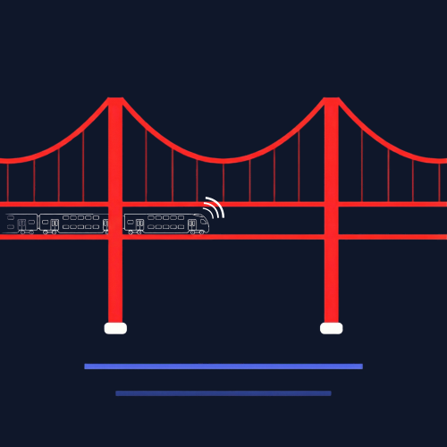

Partida
Destino
Próximo
-- min -- s
--:--
Ver Mais Comboios
A nossa sugestão para a Viagem

Quinzena Atual
A carregar...
Spotify
Ouvir no Spotify
Estações Regulares (Fase de Testes)
Usar Mesmas Estações (Invertidas)
Sentido Lisboa
Sentido Margem
Horário Inteligente (Fase de Testes)
Manhã (05:30 - 13:00)
Sentido Lisboa
Sentido Margem
Tarde (13:00 - 02:00)
Sentido Margem
Sentido Lisboa